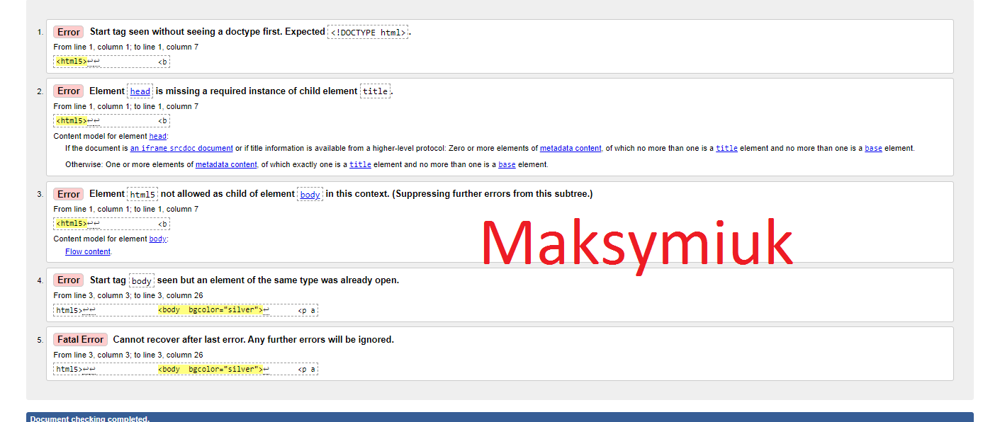

walidacja jest to proces sprawdzania strony internetowej za pomocą specjalnego programu lub innej strony intenetowej pod kątem czy nie ma błędów składniowych. strone którą chcemy sprawdzić wgrywamy do specjalnej profesjonalnej strony a strona ta poda gdzie mamy błędy i powody błędu.
